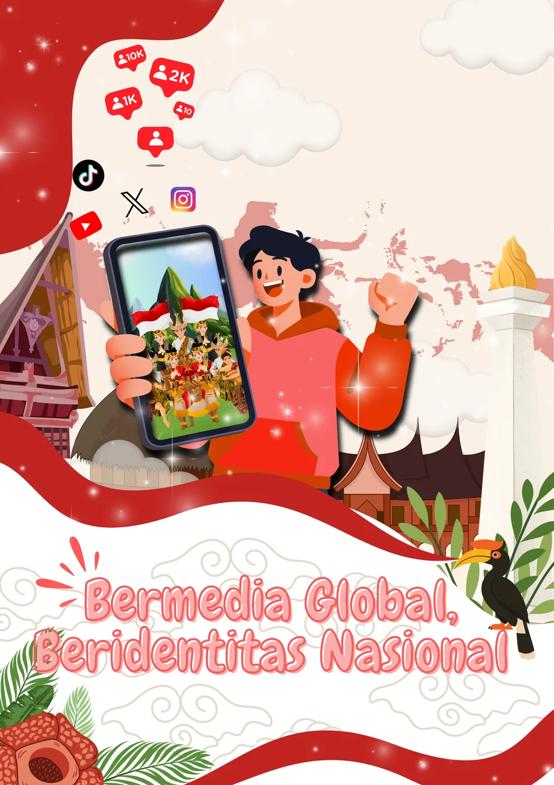

Platform pembelajaran interaktif mata kuliah Pendidikan Pancasila & Kewarganegaraan. Membedah dinamika media sosial, pembentukan identitas pemuda, penetrasi budaya global, serta solusi berbasis nilai luhur Pancasila dengan data riset empiris dan survei lapangan nyata.

Dominasi pemuda usia 18–25 tahun di ruang digital Indonesia.
Mahasiswa mengakses media sosial > 6 jam setiap harinya.
Kompilasi penelitian perguruan tinggi terakreditasi nasional.
Koefisien determinasi (R²) tertinggi pada studi mahasiswa UNTAR.
Media sosial kini beroperasi sebagai ruang sosialisasi primer. Sintesis riset membuktikan 3 fenomena fundamental:
Pemuda lebih lekat pada identitas sosial digital karena validasi instan algoritma. Terjadi paradoks nyata: 92% sadar pentingnya identitas nasional, namun hanya 22.2% yang rutin mengonsumsi konten kebudayaan nusantara.
Dramaturgi panggung depan (front stage) dan perbandingan sosial memicu kecemasan. Riset Manullang (2025) mencatat stigma medsos menyumbang R² = 59.4% ke distorsi konsep diri, dan 52.2% mahasiswa mengalami defisit rasa percaya diri.
Medsos memicu tren konsumtif/hedonis (88.8% di UNTAR), adopsi tren busana (63.9% di UMB), serta disrupsi rentang atensi yang menurunkan konsentrasi membaca literatur akademik.
Materi ajar terstruktur dengan pembahasan teoretis, data riset, studi kasus aplikatif, dan latihan refleksi nilai Pancasila:
Analisis teori dramaturgi Erving Goffman (front stage vs back stage), fabrikasi visual mahasiswa (UNAIR & UNEJ), serta mitigasi krisis percaya diri di era algoritma.
Membongkar fenomena asimetri: loop validasi dopaminergik, otonomi kurasi kelompok, pengaruh figur kreator (25.3%), dan gap antara kesadaran 92% vs konsumsi budaya 22.2%.
Dinamika gelombang K-Pop, drama internasional, dan fashion luar negeri. Riset FKIP HKBP Nommensen (37% suplai budaya asing) dan strategi ketahanan filter budaya lokal.
Ruang publik siber (X/Twitter) sebagai saluran aspirasi kebijakan vs bahaya polarisasi ruang gema (echo chamber), hoaks, cyberbullying, dan sinisme politik.
Pemuda sebagai duta konten positif. Panduan Digital Mindfulness, pembatasan durasi layar (<3 jam), literasi finansial cegah paylater, dan Tri-Level Policy Roadmap.
Ukur pemahaman Anda terhadap konsep sosiologi komunikasi, data empiris multikampus, dan implementasi nilai Pancasila melalui 8 soal kuis pilihan ganda dengan pembahasan instan.
Mulai Kuis Interaktif Sekarang 🎯 →